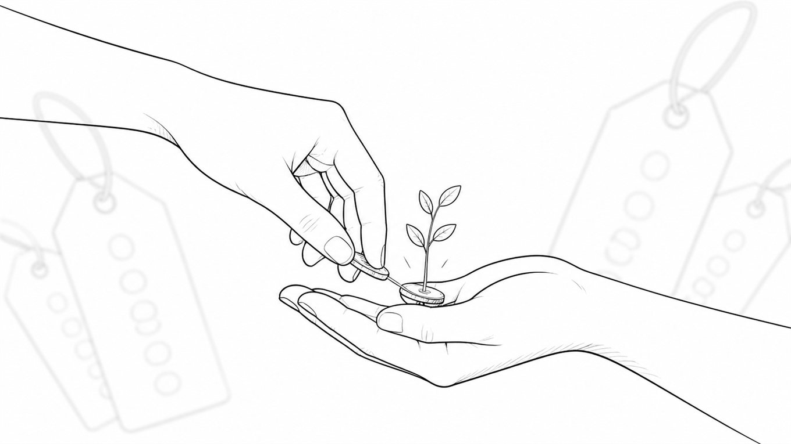

「高額商品が売れて初めて0→1」って、誰が決めたんだろう。

どーも、とーるです。
SNSでビジネス系の発信を見ていると、たまにこんな話を見かけます。
「低単価の商品が売れたくらいでは0→1とは言わない」
「高額商品が売れて、初めて0→1」
みたいな。
僕はこれ、ずっと不思議なんですよね。
じゃあ300円のハンドメイド作品を作って、それを販売していきたい人はどうなるんだろう。
300円だから、0→0.003くらい？
あと333個くらい売ったら「1」に昇格するんでしょうか。
たぶん違いますよね（笑）
そもそも0→1って、売上金額の大きさを表す言葉ではないと思うんです。
僕が考える「0→1」
僕なりの0→1は、かなりシンプルです。
自分がビジネスとして売っていきたいものに、初めてお金を払ってくれる人が現れた瞬間。
ここに価格はありません。
300円でもいい。3,000円でもいい。30万円でもいい。
大事なのは金額ではなく、「あなたは何を売ろうとしているのか」です。
たとえば、ハンドメイド作品を作っている人がいるとします。その人が「私はこのアクセサリーを作って販売していきたい」と思っていて、300円の商品が1つ売れた。
だったら、それは立派な0→1です。
それまで自分の中にしかなかったものに、誰かが300円を払ってくれた。自分が作った価値が、初めてお金に変わった。
これって普通にすごいことなんですよね。
でも、同じ300円でも「1じゃない」ことがある
少しややこしいのがここです。
同じハンドメイド作家さんでも、本当にやりたいことが「ハンドメイド教室を開くこと」だったとします。
そのためにまず、300円のアクセサリーを販売して、「こういうものを作っています」「まず私の作品を知ってください」という入口にしている。
この場合、アクセサリーが1つ売れたからといって、ハンドメイド教室の0→1を達成したわけではありません。
もちろん売上は売上です。300円を払ってくれる人がいた。作品への需要も確認できた。だから意味がないわけではありません。
でも、「この人からハンドメイドを習いたい」という価値には、まだ誰もお金を払っていないんですよね。
つまり、何円売れたかではなく、何が売れたか。 こっちのほうが大事なんです。
「初売上」と「事業の0→1」は少し違う
ここを一緒にすると、結構ややこしくなります。
たとえば将来的に10万円のコンサルティングを販売したい人が、980円の教材を販売したとします。
教材が売れた。これは間違いなく初売上です。
その教材自体を今後も商品として売っていくなら、それは0→1でもいい。
でも、「まず僕の考え方を知ってもらって、その先でコンサルを案内する」というフロント商品として作ったなら、コンサル事業としてはまだゼロです。
980円なら払ってくれる人がいることは分かった。でも、10万円払ってでも相談したいと思ってくれる人がいるかは、まだ分からない。
だから、初売上＝必ずしも本命商品の0→1ではない。 ここは分けて考えたほうがいいと思っています。
低価格のフロント商品と、高額を売る専門家ポジションでは、実は「売れる理由」がまったく違います。あわせて #コラム98「専門家と先輩——売れる構造がまったく違う」もどうぞ。
そして僕が怖いと思うのが、こっち
SNSを見ていると、昨日までごくごく普通の人だったはずなのに、ある日突然、変身するケースがあります。
プロフィールに「会社員」と書いてあった人が、翌日には「SNS集客コンサルタント」になっていたり。
ちょっと発信が伸びたら、「ブランディング講師」になっていたり。
自分の商品を一度販売したら、「起業プロデューサー」になっていたり。
進化スピードがポケモンより速いんですよ（笑）
この「強いポケモンより、まずトレーナー」の話は #コラム100「強いポケモンを集める前に、トレーナーを育ててください。」で書きました。
もちろん、こういう肩書きを名乗るのに国家資格が必要なわけではありません。名乗ろうと思えば今日からでも名乗れます。
でも僕はどうしても、「プロフィールを書き換えた瞬間から、その仕事のプロになりました」という感覚にはなれないんですよね。
こちとら学生時代から学科でビジネスを学び、そのあと自分で実店舗を経営して、実際に商売をやって、いろんな人の相談を聞いたり、試したり、失敗したり、また考えたり。そうやってやってきて、「あ、これ年収100万円くらいいきそうだな」となったところで、ようやく開業届を出して今があります。
なので、プロフィールを書き換えたその日から「今日からコンサルタントです！」と言われると、
いやいや。んなわけねーだろ。
とは思うわけです（笑）
この「肩書きを先につける文化」については、#コラム101「改善しようとして、逆に壊れるSNSスクールの話」でも触れています。
……と、完全に話がそれました。戻します。
なぜこんな話をしたかというと、この「肩書きを先につける文化」と「0→1するなら高額商品を売れ」が、ものすごく相性がいいんですよね。
まだ何も分からないのに、30万円の商品だけ完成する
まだ商品を売ったこともない。お客さんが何に悩んでいるかもよく分からない。自分の何に価値を感じてもらえるのかも分からない。
でも、「0→1するぞ！」と気合いを入れる。肩書きを変える。プロフィールを整える。商品設計をする。
そして、30万円の商品が完成します。
いや、なんで（笑）
もちろん、高額商品そのものが悪いわけではありません。30万円の価値があるなら30万円で売ればいい。50万円の価値があるなら50万円で売ればいい。僕も価格が高いこと自体を否定するつもりはありません。
でも、「0→1するために高額にする」は、順番が逆なんですよね。
高額だから1になるわけじゃない。その価値に対して、その価格を払いたい人が現れたから、初めてビジネスとして成立する。ただそれだけです。
本当は「1」になってからがビジネス本番
そしてもうひとつ。
0→1って、なんとなくゴールみたいに扱われています。「ついに0→1達成しました！」
もちろん嬉しい。僕も初めて売れたときは嬉しかったです。
でも、ビジネスとして考えるなら、1になってからが本番なんですよね。
なぜ、その人は買ってくれたのか。どこに価値を感じたのか。なぜ他の商品ではなく、自分の商品だったのか。同じ理由で2人目も買ってくれるのか。もっと良くするにはどうすればいいのか。
1人売れたことで、初めて考えられることが一気に増えます。
0の状態では「たぶんこうだろう」「こういう人が欲しいはず」という仮説しかありません。でも1になった瞬間、そこに初めて、実際のお客さんという答えが現れる。
この「実際のお客さんという答え」の話は、#コラム105「答えは合っている。でも、次は解けない。」ともつながります。
だから僕は、0→1を「成功」とはあまり考えていません。むしろ、ビジネスのスタート地点に立った状態くらいに思っています。
ゲームでいうなら、まだオープニングムービーが終わったくらいです。ラスボスどころか、村から出てません。
0→1をしたいなら、最初に決めるのは価格じゃない
だから、「0→1したいんですが、いくらの商品を作ればいいですか？」と聞かれたら、僕なら先に聞きます。
「そもそも、あなたは何を売っていきたいんですか？」
300円のアクセサリーでもいい。3,000円の教材でもいい。月1万円の料理教室でもいい。30万円のコンサルティングでもいい。
その価格にちゃんと理由があって、自分がこれから提供していきたい価値に、初めて誰かがお金を払ってくれた。それが「1」なんじゃないかなと思います。
0→1をするために必要なのは、ゼロをたくさんつけた価格表ではありません。必要なのは、「これにお金を払いたい」と言ってくれる最初の一人。
その人が現れた瞬間、あなたの中だけにあった価値が、初めて市場の中に出ます。
そして、そこから。ようやくビジネスが始まります。
なんつて！
とーる｜猫好きの行動経済アナリスト